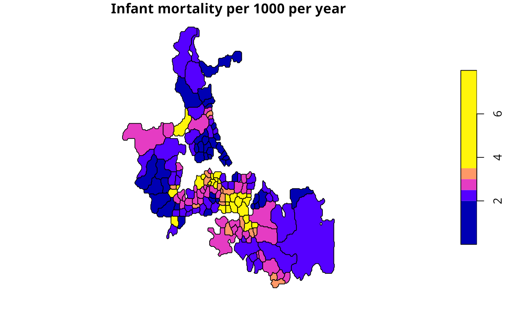

Local Empirical Bayes estimator
EBlocal.RdThe function computes local empirical Bayes estimates for rates "shrunk" to a neighbourhood mean for neighbourhoods given by the nb neighbourhood list.
Arguments
- ri
a numeric vector of counts of cases the same length as the neighbours list in nb; if there are many zero counts, some estimates may be affected by division by zero, see https://stat.ethz.ch/pipermail/r-sig-geo/2022-January/028882.html
- ni
a numeric vector of populations at risk the same length as the neighbours list in nb
- nb
a
nbobject of neighbour relationships- zero.policy
default NULL, use global option value; if TRUE assign zero to the lagged value of zones without neighbours, if FALSE assign NA
- spChk
should the data vector names be checked against the spatial objects for identity integrity, TRUE, or FALSE, default NULL to use
get.spChkOption()- geoda
default=FALSE, following Marshall's algorithm as interpreted by Bailey and Gatrell, pp. 305-307, and exercise 8.2, pp. 328-330 for the definition of phi; TRUE for the definition of phi used in GeoDa (see discussion on OpenSpace mailing list June 2003: http://agec221.agecon.uiuc.edu/pipermail/openspace/2003-June/thread.html)
Details
Details of the implementation are to be found in Marshall, p. 286, and Bailey and Gatrell p. 307 and exercise 8.2, pp. 328–330. The example results do not fully correspond to the sources because of slightly differing neighbourhoods, but are generally close. If there are many zero counts, some estimates may be affected by division by zero, see https://stat.ethz.ch/pipermail/r-sig-geo/2022-January/028882.html.
Value
A data frame with two columns:
- raw
a numerical vector of raw (crude) rates
- est
a numerical vector of local empirical Bayes estimates
and a parameters attribute list with components (if both are zero, the estimate will be NaN, https://stat.ethz.ch/pipermail/r-sig-geo/2022-January/028882.html):
- a
a numerical vector of local phi values
- m
a numerical vector of local gamma values
References
Marshall R M (1991) Mapping disease and mortality rates using Empirical Bayes Estimators, Applied Statistics, 40, 283–294; Bailey T, Gatrell A (1995) Interactive Spatial Data Analysis, Harlow: Longman, pp. 303–306.
Author
Roger Bivand Roger.Bivand@nhh.no, based on contributions by Marilia Carvalho
Examples
auckland <- st_read(system.file("shapes/auckland.gpkg", package="spData")[1], quiet=TRUE)
auckland.nb <- poly2nb(auckland)
res <- EBlocal(auckland$M77_85, 9*auckland$Und5_81, auckland.nb)
auckland$est000 <- res$est*1000
plot(auckland[,"est000"], breaks=c(0,2,2.5,3,3.5,8),
main="Infant mortality per 1000 per year")
